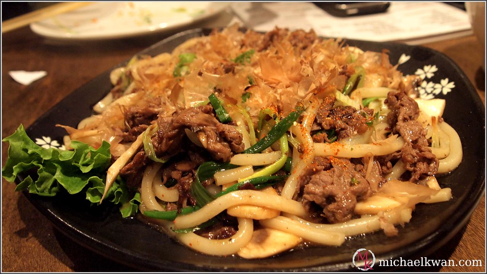

Yaki Udon Recipe

Photo by Michael Kwan, licensed under CC BY 2.0
Description
Yaki Udon is a Japanese stir-fried noodle dish made with thick, chewy udon noodles, vegetables, and a savory sauce. It typically includes ingredients like sliced pork or beef, onions, cabbage, and carrots, all sautéed together in a soy-based sauce with hints of mirin, sake, and sesame oil. The dish is often garnished with scallions, pickled ginger, bonito flakes, or sesame seeds. Yaki Udon is a close cousin to Yakisoba, but it uses udon noodles instead of soba or ramen-style noodles, giving it a heartier, chewier texture. It's a popular comfort food in Japan, commonly found in izakayas (Japanese pubs) and easy to make at home.
Ingredients
- ¼ cup oyster sauce
- 3 tablespoons soy sauce
- 2 tablespoons mirin
- 1 tablespoon unseasoned rice vinegar
- 2 teaspoons Worcestershire sauce
- 2 teaspoons toasted sesame oil
- 1 teaspoon packed light brown sugar
- 1 teaspoon Sriracha sauce
- 1 medium garlic, grated
- 1 medium (5-oz.) bunch scallions
- 2 tablespoons canola oil
- 12 ounces sliced mixed wild mushrooms (such as cremini, oyster, and shiitake) (about 6 cups)
- 2 medium heads baby bok choy, thinly sliced
- 1 (10 ounce) package carrots, cut into match-stick size pieces
- ½ cup water, divided
- 1 (14 ounce) package pre-cooked udon noodles (such as KA-ME)
- Optional garnishes: thinly sliced nori, cilantro, lime wedges, furikake seasoning
Steps
- Whisk together oyster sauce, soy sauce, mirin, rice vinegar, Worcestershire, sesame oil, sugar, Sriracha, and garlic in a small bowl; set aside. Remove root ends from scallions and discard. Chop whites and light greens into 2-inch pieces and quarter pieces lengthwise; set aside. Thinly slice remaining dark greens of scallions and reserve for garnish.
- Heat oil in a large skillet or wok over medium-high heat. Add mushrooms in a single layer and cook, undisturbed, until browned on first side, about 3 minutes. Stir and continue to cook, stirring occasionally, until mushrooms are tender and golden brown on both sides, about 4 more minutes. Add bok choy, carrots, sliced whites and light greens of scallions, and 1/4 cup water to pan with mushrooms. Cook, stirring occasionally, until vegetables are just tender, about 3 minutes.
- Add udon noodles and remaining 1/4 cup water and cook, gently separating noodles with tongs or spoon. Add reserved oyster sauce mixture and cook, stirring constantly, until noodles and vegetables are well-coated, about 1 minute. Divide among serving bowls and garnish with reserved sliced greens of scallions and optional garnishes. Serve immediately.
Home